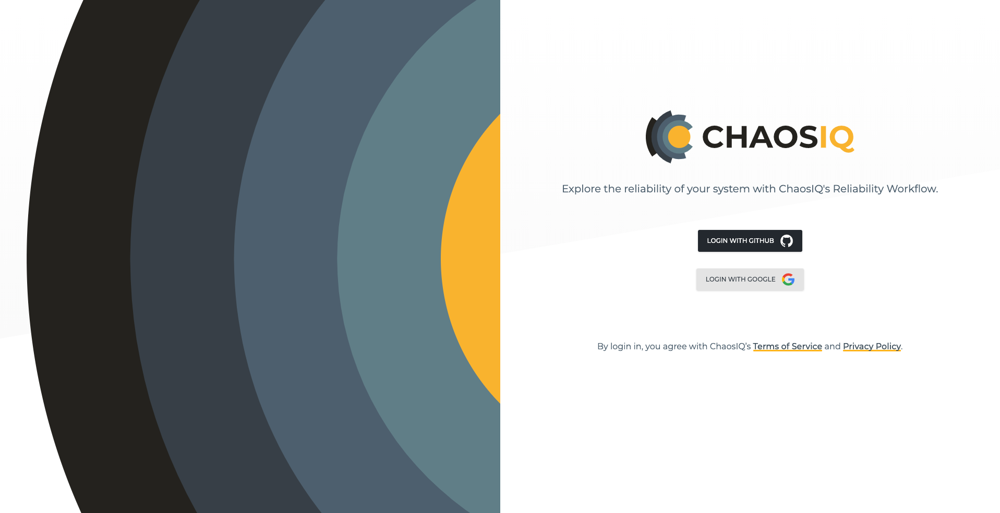
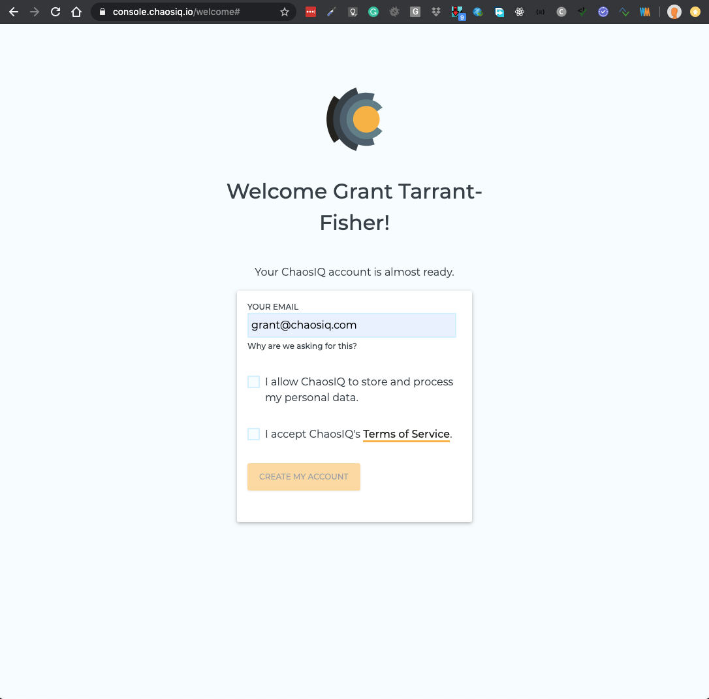
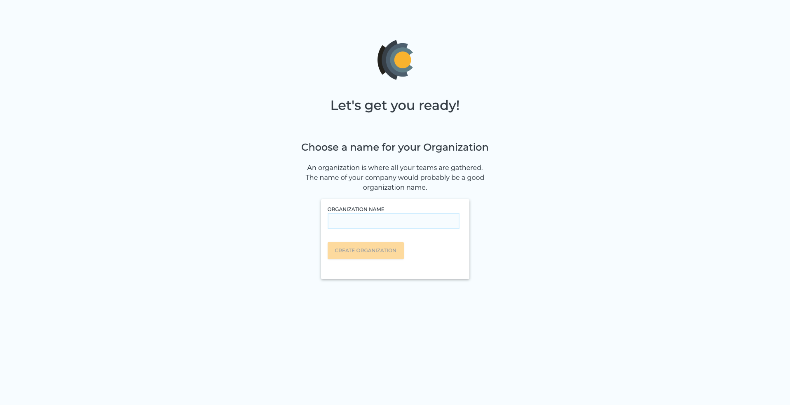
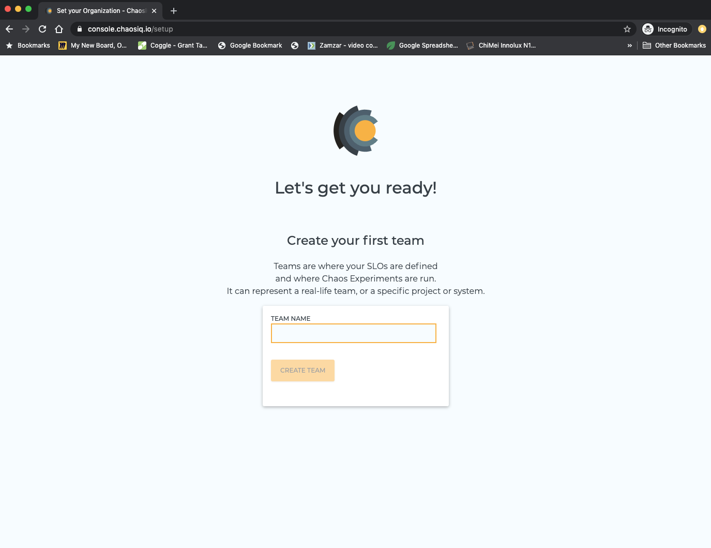
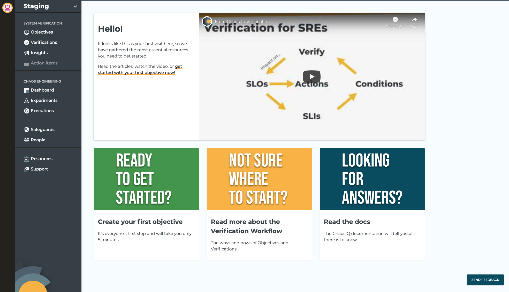
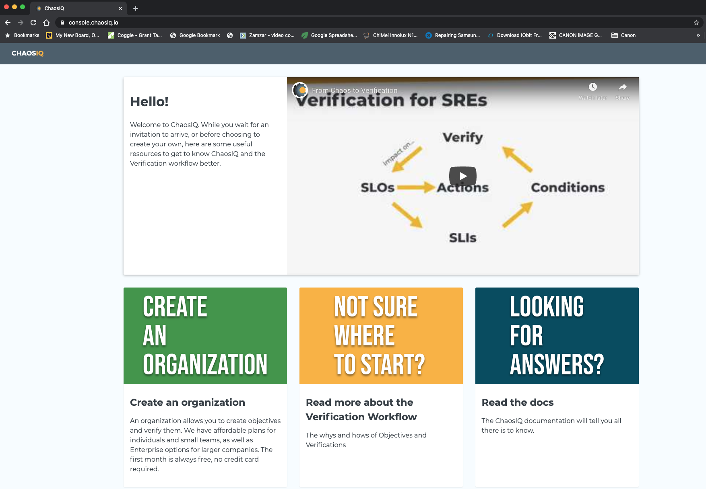

Login to ChaosIQ
When you open https://console.chaosiq.io in your browser you will be presented with the ChaosIQ login page:

When you select your preferred authentication provider you will be prompted for the required authentication details. Once you have authenticated you will be presented with the ChaosIQ Welcome page:

You can enter your preferred email address at this point, this can be different from the email address provided by the authentication provider. You are also asked to accept ChaosIQ terms of Service and give ChaosIQ permission to store your data.
You will then be asked to choose a plan, ChaosIQ are currently only offering the Early Access Plan (more plans will follow):

Normally at this point users subscribe and create an Organization and teams to start using the ChaosIQ tools. If you select Subscribe Now you will be prompted for an Organization name:
Note
You can optionally to skip this stage for now, if you do so see Skipping subscription.

Enter an Organization name, the Organization name has to be unique, it can't be one that has been used before within ChaosIQ. You will then be asked to create a team. Teams are where your Objectives are defined and where Chaos Experiments are run. It can represent a real-life team, or a specific project or system

Once you have created the team name you will be taken to your teams start page where you can go on to create your first objective.

That’s it! You have authenticated and logged in to ChaosIQ, you have created your Organization and a Team you are all set to start using the ChaosIQ tools.
Skipping subscription
If you selected to Skip this at the subscribe stage you will be taken to the ChaosIQ start page:

You have a number of choices from here, including links to articles, links to the ChaosIQ documentation and a useful video on Verification workflow. If you select Create an Organization, you will then be taken back to the Subscribe page.